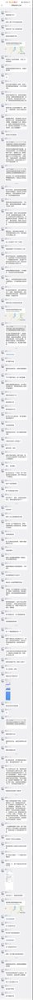
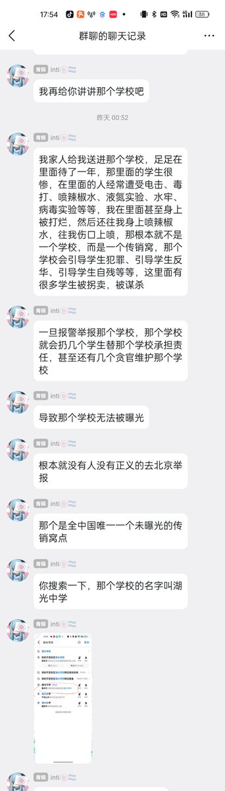
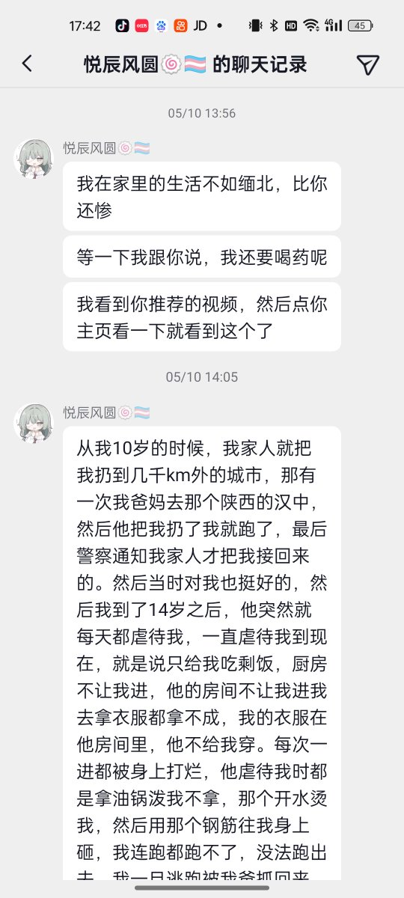

👾𝓽𝓱𝓮𝓯𝓸𝓻𝓮𝓿𝓮𝓻𝓲𝓻𝓲𝓼🍥
@theforeveriris
@ghgiopjkl 别急着扩散，这个 inti（现 Vera，原 Patricia）二月中旬那会儿可是出名的很，包括 @Re_ZaoTon 在内的很多人都被他骚扰或攻击过。而且他还有大量支持法轮功邪教的历史言论（推特和 QQ 空间）。
时间久远，我找不到证据截图，有保存的推 u可以在下面贴一下
还有当事人可以解释一下什么叫病毒实验吗



GreenhouseGas🏳️⚧️
@ghgiopjkl
【求转发扩散：我收到一条求助信息 一位mtf说被家人非法拘禁】
一名未成年mtf被父亲长期限制人身自由 并多次扬言“把她卖掉” 她之前曾试图报警 但父亲以“精神问题”为由敷衍警方 该家庭曾将她送入位于安徽省亳州市涡阳县临湖镇的湖光学校 该校地处荒野 周围无建筑 https://t.co/fMlcXC629W